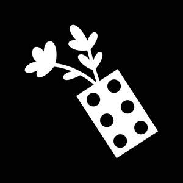
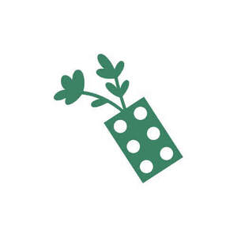

Trade Mark Journal No.2026/006 6 February 2026
UK00004327459 21 January 2026 (41,44)
Mark 1
Mark 2

Mark 3

Mark 4
Mark 5
- Class 41
- Education and training services; educational and training services relating to social skills therapy, play therapy, child development, health, well-being, neurodiversity, neurodivergence, neurodivergent conditions, mental health, therapeutic treatments, games and communication skills; education and training of professionals in relation to education, health, and care; educational research; educational services provided by special needs assistants; entertainment, education and instruction services; entertainment services relating to social skills therapy, play therapy, child development, health, well-being, neurodiversity, neurodivergence, neurodivergent conditions, mental health, therapeutic treatments, games and communication skills; conducting instructional courses; educational and instruction services relating to arts and crafts; arranging and conducting workshops; arranging and conducting seminars; arranging and conducting in-person, online and recorded training courses, seminars, lectures, programmes, workshops, conferences, meetings and talks; organising of educational games; publication of texts, printed matter, instructional, educational and teaching materials; printed and electronic publications; provision of educational information; provision of information on social skills therapy, play therapy, child development, health, well-being, neurodiversity, neurodivergence, neurodivergent conditions, mental health, therapeutic treatments, games and communication skills; provision of children’s educational services through play groups; teaching assessments for working with and counteracting learning difficulties; personal development training; team building (education); kindergarten services [education or entertainment]; providing facilities for educational purposes; organisation of webinars; information, advisory and consultancy services related to all of the aforesaid.
- Class 44
- Therapy services; physical therapy services; play therapy services; art therapy services; creative therapy services; integrative therapy services; psychotherapy services; speech therapy services; provision of group therapy services; individual and group play therapy for children and adults; provision of social skills and child development focused therapy; provision of therapy for neurodivergent conditions, autism, ADHD, social communication difficulties, anxiety, trauma, attachment difficulties and social isolation; clinics; health care; psychological counselling; counselling services for children using play-based methods; sensory integrative and neurodevelopmental therapy services and assessments; psychology services in relation to child development; neurodivergent conditions screening services; attention deficit hyperactivity disorder screening services; psychological treatment; occupational therapy; learning disability screening services; psychological diagnosis services; assessment, diagnosis, and treatment planning in the field of healthcare, neurodiversity, mental health and wellbeing for children and young people; medical counseling relating to stress; mental health services; medical and healthcare services; provision of information relating to behavioral modification; provision of sensory processing assessments and interventions; providing mental rehabilitation facilities; neurodevelopmental assessments and reporting; neurodevelopmental and behavioural advisory services; disabled children’s support and advice; neurodisability outreach services; specialist therapy advisory services; information, advisory and consultancy services related to all of the aforesaid.
Play Included C.I.C.
Representative: Stobbs